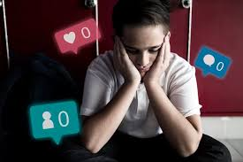
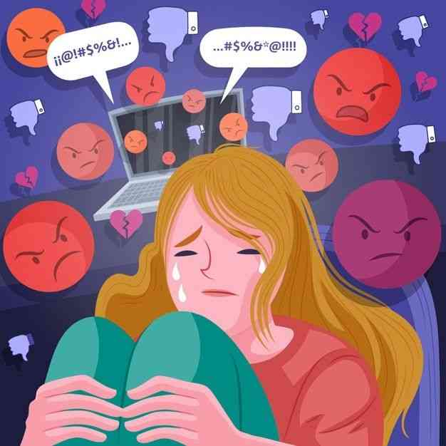
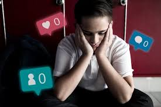
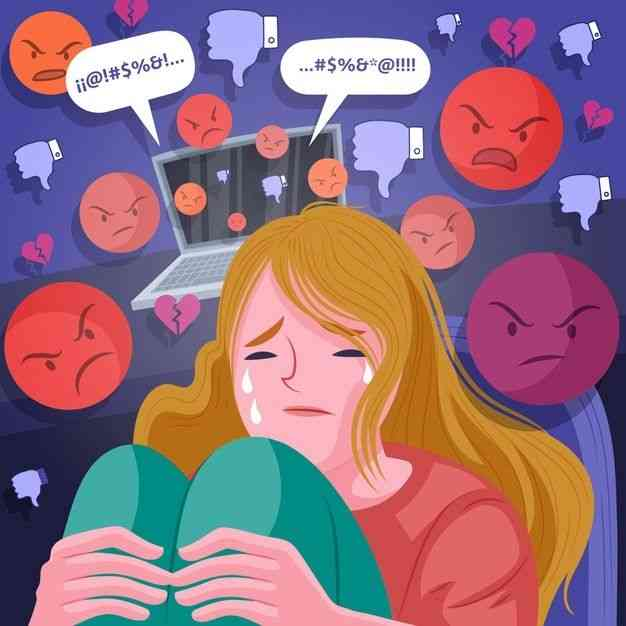

Meski begitu, media sosial justru bisa menjadi bumerang bagi anak dan remaja apabila digunakan tanpa pengawasan orang tua. Dampak buruk yang mungkin timbul dari penggunaan media sosial pada remaja dan anak meliputi: 1)Risiko terkena atau pelaku perilaku negatif, seperti cyberbullying, racist, dan body shaming. 2)Gangguan tidur akibat terus-menerus scrolling media sosial. 3)Sulit untuk mempertahankan fokus dan konsentrasi. 4)Percaya diri menurun karena membandingkan kehidupan pribadi dengan orang-orang kaya/cantik yang ada di media sosial. 5)Termakan oleh rumor atau berita hoaks yang tidak benar. 6)Terkena penipuan dari predator online.
Selain risiko di atas, penggunaan media sosial juga berdampak pada kesehatan psikologis anak-anak. Dampak psikologis yang dapat muncul pada anak dan remaja akibat penggunaan media sosial yang berlebihan meliputi gangguan kecemasan dan depresi.